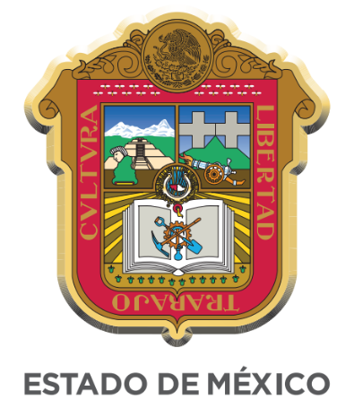
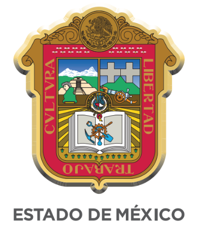
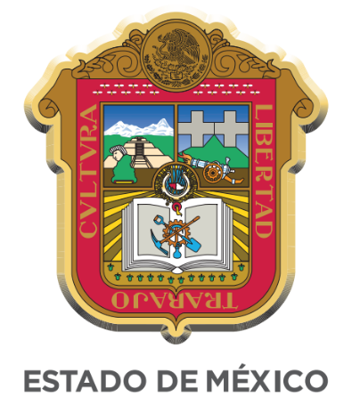

Clinica de Santa Cruz Tepexpan 
Clinica de Santa Cruz Tepexpan 
| Regresar |
Clinica de Santa Cruz Tepexpan | Regresar |
Hace 46 años, cuando empezó a funcionar anteriormente, contábamos aquí con esta área de farmacia,sala de espera y el area de medicina preventiva de iguaul manera se cuenta con una area de psicologia,enfermeria y estimulaciones asi como tambien se tiene un espacio de RPBI las modificaciones que se fueron haciendo,ahorita tenemos lo que es consulta externa y contamos con tres consultorios
Esta 1 a de farmacia,la sala de espera el área de medicina preventiva, el área de psicologías el área de enfermería y este pues también tenemos aquí en el con diferentes este espacios que es lo de estimulación temprana y infecciones, bueno de que es lo que entonces este pues en la área de la de acá atrás con de patio, está también lo que es este el espacio de RPBI y cuando inició nada más este contaba contaba con que contaba pues era así como que un un este un hospital, pero chiquito en chiquito y se sigue este programas, pero nada más con la diferencia de qué ya no se atienden aquí ya no se están hospitalizando como anteriormente se hospitalizada entonces anteriormente si sea así. Gracias Hace 26 años que yo llegué, aquí se hacían esas actividades, entonces ahorita pues ya nada más es con su texto Y también nos podría compartir los nombres del personal que tienen aquí este pues tenemos tres médicos este el médico responsable pues es el doctor José Luis Guevara contamos también con dos otros dos doctores base el doctor Raúl Vázquez
De enfermeria actualmente contamos con las siguientes enfermeras y:
Asi como tambien se cuenta con lo necesario para a adultos y adolecentes, tratan la estimulacion y vacunas se considera que la forma de agendar citas es un poco desordenada ya que al momento de pasar ya que los dias de agendados para los doiabeticos no se atiende a nadie mas